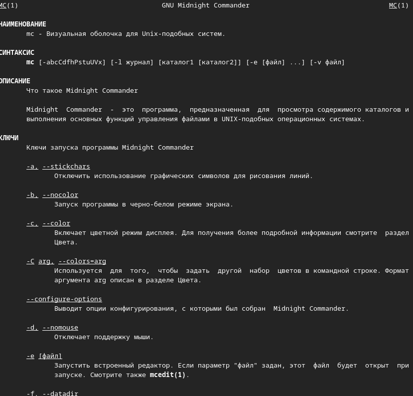
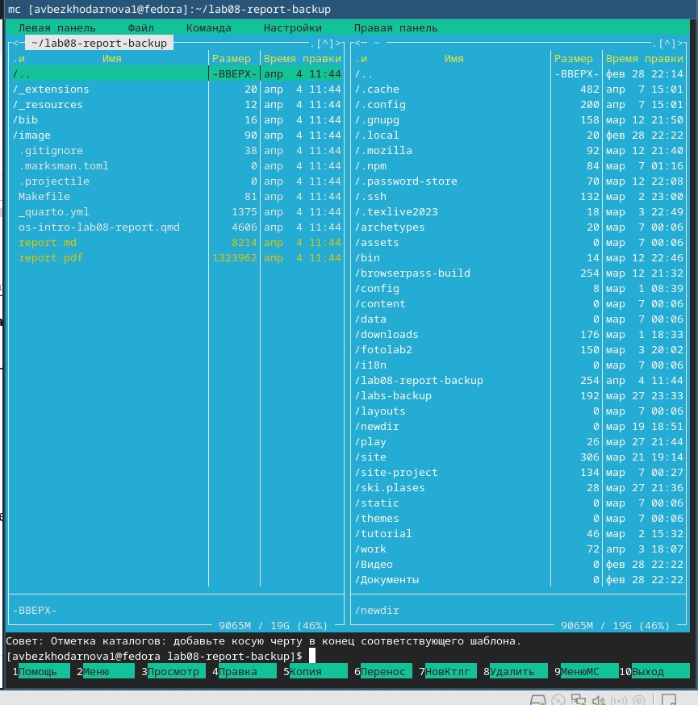
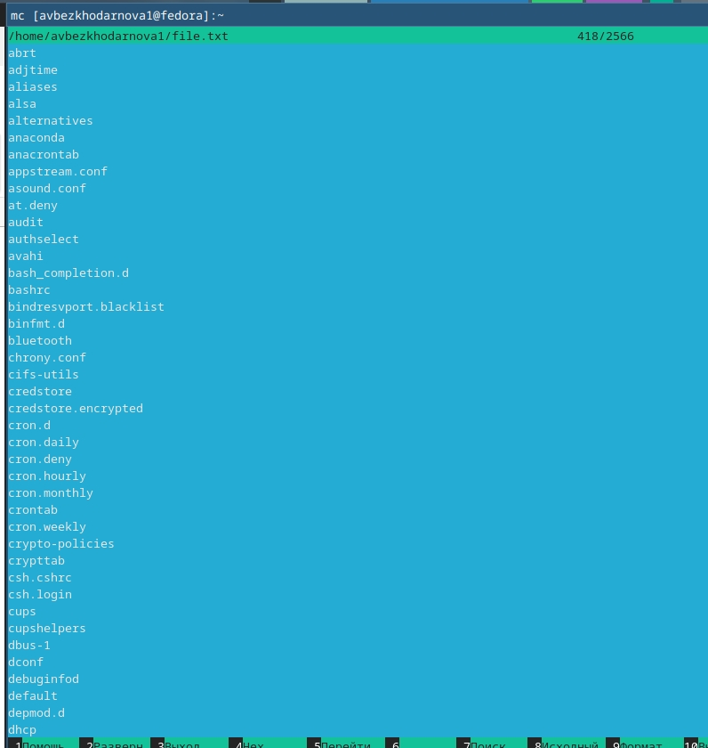
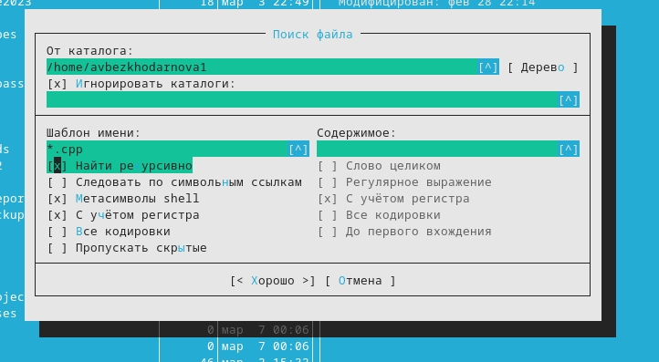
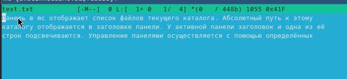
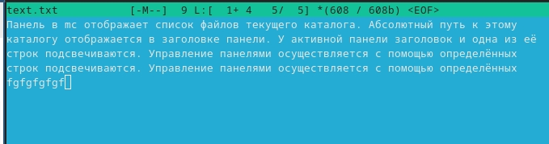
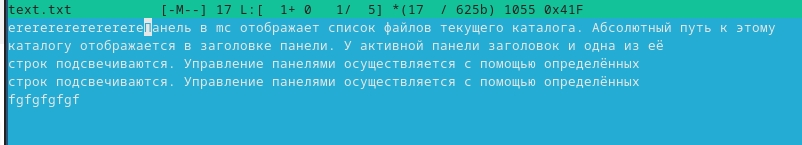

Лабораторная работа №9
Архитектура компьютеров
Безходарнова А.В.
Российский университет дружбы народов, Москва, Россия
11 апреля 2026
Информация
Докладчик
- Безходарнова Алиса Викторовна
- Студентка НКАбд-01-25
- Алiса
- Российский университет дружбы народов
- 1032253545@rudn.ru

Цель работы
Освоение основных возможностей командной оболочки Midnight Commander. Приобретение навыков практической работы по просмотру каталогов и файлов; манипуляций с ними.
Задание
Выполнить лабораторную работу по указаниям.
Теоретическое введение
Командная оболочка — интерфейс взаимодействия пользователя с операционной системой и программным обеспечением посредством команд. Midnight Commander (или mc) — псевдографическая командная оболочка для UNIX/Linux систем. Для запуска mc необходимо в командной строке набрать mc и нажать Enter .Рабочее пространство mc имеет две панели, отображающие по умолчанию списки файлов двух каталогов
Выполнение лабораторной работы
Вызываю man mc чтобы изучить информацию. (рис. @fig:001).

Изучаю структуру и меню (рис. @fig:002).

Изучаю файл (Рис @fig:003).

Выполняю поиск файлов (Рис @fig:004)

Cоздаю текстовый файл и вставляю туда текст (Рис @fig:005)

Копирую строчку текста, удаляю ее, потом с помощью клавиш пишу в конце текста

Вставляю текст в начало файла. (Рис @fig:007)

){#fig:007 width=70}Вывод
В ходе данной лабораторной работы я освоила основные возможности командной облочки Midnight Commander. Приобрела навыки практической работы.
Контрольные вопросы
Kакие режимы работы есть в mc. Охарактеризуйте их. Midnight Commander имеет два основных режима отображения панелей: режим Информация, показывающий данные о текущем файле и файловой системе, и режим Дерево, отображающее структуру каталогов.
Какие операции с файлами можно выполнить как с помощью команд shell, так и с помощью меню (комбинаций клавиш) mc? Приведите несколько примеров. Такие операции как копирование, перемещение и удаление файлов можно выполнить как стандартными командами shell (cp, mv, rm), так и в mc с помощью функциональных клавиш F5, F6 и F8 соответственно.
Опишите структура меню левой (или правой) панели mc, дайте характеристику командам. Меню левой и правой панели позволяет выбрать формат списка файлов (стандартный, расширенный, ускоренный), задать порядок сортировки, а также переключить режим отображения панели на Информация или Дерево.
Опишите структура меню Файл mc, дайте характеристику командам. Меню Файл содержит команды для работы с файлами: просмотр (F3), правка (F4), копирование (F5), перемещение (F6), удаление (F8), создание каталога (F7), а также изменение прав доступа (Ctrl-x c) и владельца (Ctrl-x o).
Опишите структура меню Команда mc, дайте характеристику командам. Меню Команда включает такие возможности как дерево каталогов, поиск файлов (Alt+?), сравнение каталогов (Ctrl-x d), перестановку панелей (Ctrl-u), а также редактирование файла меню и файла расширений пользователя.
Опишите структура меню Настройки mc, дайте характеристику командам. Меню Настройки позволяет сконфигурировать внешний вид mc (цвета, режим отображения), установить подтверждения для опасных операций, настроить виртуальные файловые системы и выполнить распознавание клавиш.
Назовите и дайте характеристику встроенным командам mc. Встроенные команды mc включают работу с виртуальными файловыми системами (архивами, FTP, SFTP), поддержку пользовательского меню (F2), список каталогов быстрого доступа (Ctrl+), а также выполнение операций в фоновом режиме.
Назовите и дайте характеристику командам встроенного редактора mc. Встроенный редактор mcedit поддерживает такие команды: удаление строки (Ctrl-y), отмена действия (Ctrl-u), поиск (F7), замена (F4), копирование выделенного фрагмента (F5), перемещение выделенного фрагмента (F6), удаление выделенного фрагмента (F8), сохранение (F2) и выход (F10).
Дайте характеристику средствам mc, которые позволяют создавать меню, определяемые пользователем. Пользовательское меню создаётся через редактирование файла ~/.config/mc/menu, вызывается по клавише F2 и позволяет выполнять часто повторяемые команды.
- Дайте характеристику средствам mc, которые позволяют выполнять действия, определяемые пользователем, над текущим файлом. Средства включают файл расширений, который ассоциирует типы файлов с определёнными действиями, а также возможность добавлять свои команды в пользовательское меню для обработки текущего файла.